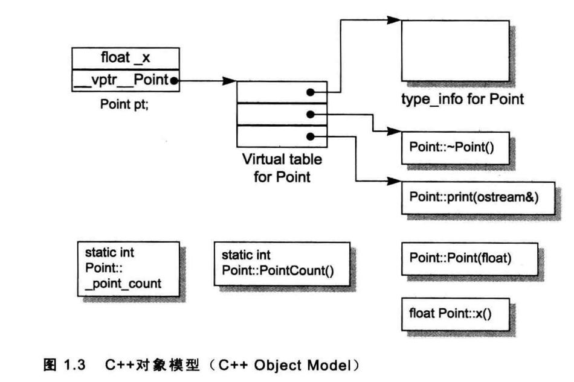
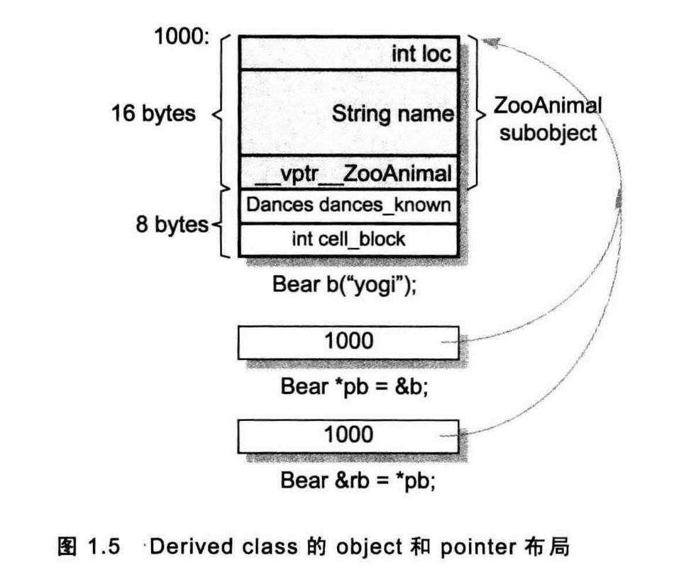

1. 加上封装的布局成本
//C
typedef struct {
float x;
float y;
float z;
} Point3D;
//C++
class Point3DClass {
private:
float _x;
float _y;
float _z;
public:
Point3DClass(float x, float y, float z) : _x(x), _y(y), _z(z) {}
float x();
float y();
float z();
};
Point3d转换到C++之后，class Point3d并没有增加成本。三个data members直接内含在每一个class object之中，就像C struct的情况一样。 而member functions虽然含在class 的声明之内，却不出现在object之中。每一个non-inline member function只会诞生一个函数实例。而内联函数将使用相应的函数代码替换函数调用。
C++在布局以及存取时间上主要的额外负担是由virtual引起的，包括：
- vIrtual function机制用以支持一个有效率的“执行期绑定”。
- virtual base class 用以实现“多次出现在继承体系中的base class，有一个单一而被共享的实例”。
此外还有一些多重继承下的额外负担，发生在“一个derived class和其第二或后继之base class 的转换"之间。
2. C++对象模型
在C++中，有两种成员变量：静态的（static）和非静态的。还有三种成员方法：静态函数（static）、虚函数（virtual）和普通函数。
class Point {
public:
Point(float xval);
virtual ~Point();
float x();
static int PointCount();
protected:
virtual ostream &print(ostream &os) const;
float _x;
static int _point_count;
};
简单对象模型
不重要，见书即可。
表格驱动对象模型
不重要，见书即可。
2.1. C++对象模型
在此模型中，普通成员变量放在每一个obj之中，静态成员变量放在obj之外。静态和普通成员函数也放在obj之外。
虚函数是这样做的：
- 每一个类产生出一堆指向虚函数的指针，放在表格之中。这个表格被称为虚函数表（ virtual table (vtbl)）。
每一个obj被安插一个指针，指向相关的virtual table。通常这个指针被称为vptr。vptr的设定和重置都由每一个类的构造函数、析构函数和copy assignment运算符自动完成。每一个class所关联的类型信息对象（type_info object）（用以支持runtime type identification， RTTI，在Java中的一个应用是反射）也经由virtual table被指出来，通常放在表格的第一个slot。
优点：空间和时间复杂度较低。
- 缺点：如果应用程序代码本身未曾改变，但用到的普通成员变量有所修改，那么那些应用程序代码同样得重新编译。

2.2. 加上继承的模型
见其他部分。
3. 关键词的差异
这里的关键词指的是struct和class，C++为了兼容C，struct和class是一种东西，两者区别就是struct默认可见性是public，而class是private。
3.1. 策略性正确的struct
如果C++声明一个类A继承C中的一个struct B，然后调用C中的函数，传入A对象（参数为B类型）。这时候有可能导致问题。
因为有些编译器在处理继承的时候添加了额外的成员变量，对象内存布局的不一致可能会导致问题。
4. 对象的差异
需要多少内存才能够表现一个对象？一般而言要有：
- 其普通成员变量的总和大小。
- 字节对齐。
- 加上为了支持virtual而由内部产生的任何额外负担。
4.1. 指针的类型
class ZooAnimal {
public:
ZooAnimal();
virtual ~ ZooAnimal();
virtual void rotate();
protected:
int loc;
String name;
};
ZooAnimal *px;
int *pi;
Array< String > *pta;
指向不同类型的各指针的相同点是可以指向同一个位置，不同点是对内存内容及大小的解释不同。
类型转换(cast)其实是一种编译器指令。大部分情况下它并不改变一个指针所含的真正地址，它只影响“被指出之内存的大小和其内容”的解释方式。
4.2. 加上多态
class Bear : public ZooAnimal {
public:
Bear();
~Bear();
void rotate();
virtual void dance();
protected:
enum Dances {...};
Dances dances_known;
int cell_block;
};
可能的内存布局：

Bear b;
ZooAnimal *pz = &b;
Bear *pb = &b;
除了ZooAnimal中出现的成员，不能够使用pz来直接处理Bear的任何members。唯一例外是通过virtual机制，即调用虚函数rotate()，调用的是Bear的rotate函数。
另外一种情况：
Bear b;
ZooAnimal za = b;
//调用的是ZooAnimal的rotate函数
za.rotate();
问题：
- 为什么rotate所调用的是ZooAnimal实例而不是Bear实例？
- 如果初始化函数（上面的赋值操作）将一个对象内容完整拷贝到另一个对象去，为什么za的vptr不指向Bear的virtual table？
第一个问题，多态只适用于指针和引用，不适用于对象。因为此时内存布局发生变化（创建了一个新的对象），而指针和引用并不影响内存，只是解释内存内容。
第二个问题，构造和赋值操作并不会改变虚函数表指针的内容。